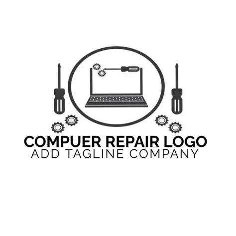

Welcome to our business homepage
We are a small computer repair business located in Independence Village, Belize.
We offer many services, including:
🛠️ Hardware Repairs
- Screen Repairs: Fixing broken or malfunctioning screens on laptops and desktops.
- Component Replacement: Replacing damaged parts such as hard drives, batteries, and motherboards.
- Upgrades: Enhancing system performance by upgrading components like RAM or installing SSDs.
💿 Software Services
- Virus and Malware Removal: Cleaning systems infected with malicious software to restore functionality and security.
- Software Installation: Installing operating systems, applications, and necessary updates.
- Data Recovery: Retrieving lost or corrupted data from damaged drives or systems.